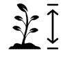
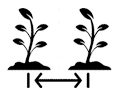

Retour à l'accueil
| J | F | M | A | M | J | J | A | S | O | N | D | |
|---|---|---|---|---|---|---|---|---|---|---|---|---|
- Type de plante :
- annuelle en Europe.
- Cycle de vie :
- 1 ans
- Intérêt :
- jardins et prairies fleuries,
- terrasses,
- balcons,
- plante comestible,
- médicinale,
- mellifère
- plante allié au potager
- Utilisation :
- pleine terre,
- pots
- Couleurs :
- Forme et feuillage :
- étalé, buissonnant .
- caduc
- Dimensions :
-  20 à 70 cm.
- 30 à 50 cm.
- rapide.
-  jusqu’à 8 pieds/m²
- Méthode de multiplication
- semis
- environnement :
- jusqu’à 0°
- soleil ou mi-ombre
- moyen
- Type de sols : argileux, calcaire, sableux, caillouteux, humus, terreau, drainé
- neutre.
- océanique, semi-océanique, continental, méditerranéen, montagnard.
 jusqu’à 0°
jusqu’à 0°